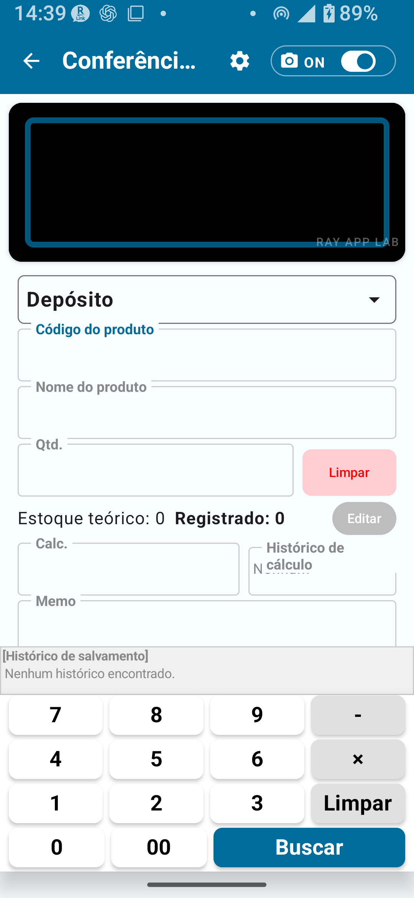

Visão geral do inventário físico gratuito
O inventário físico consiste em contar as mercadorias reais no local e registrar as quantidades. A versão gratuita permite experimentar o fluxo básico do inventário físico.
O fluxo de inventário é: Ler produto → Inserir quantidade → Salvar → Verificar histórico.
Funcionalidades disponíveis no inventário gratuito
- Inserção ou leitura de código do produto / código de barras
- Inserção do nome do produto
- Inserção da quantidade efetivamente contada
- Inserção de observações
- Consulta do histórico de inventário
- Salvamento e exportação dentro do limite gratuito

Limites da versão gratuita
| Item | Limite da versão gratuita | Como remover |
|---|---|---|
| Registros de cadastro | Máx. 30 | Plano Padrão ou superior |
| Registros de histórico de inventário | Máx. 30 | Plano Padrão ou superior |
| Registros de exportação | Máx. 30 | Plano Padrão ou superior |
| Bloqueio de rotação de tela | Não disponível | Plano Padrão ou superior |
| Configurações detalhadas de regras de código | Não disponível | Plano Completo |
| Configurações detalhadas de regras de localização | Não disponível | Plano Completo |
| Configurações detalhadas de câmera | Não disponível | Plano Completo |
| Exportação CSV expandida | Não disponível | Plano Completo |
Inventário passo a passo
- Na Tela Inicial, toque em Inventário físico.
- Leia o código de barras ou insira manualmente o código do produto.
- O nome do produto é exibido. Se o código não estiver cadastrado, insira o nome manualmente.
- Confirme ou selecione a localização (depósito, loja etc.).
- Insira a quantidade efetivamente contada.
- Insira observações se necessário.
- Toque em Salvar para registrar este item no histórico de inventário.
- Verifique se o registro foi salvo no histórico de inventário.
Vários produtos em sequência
- Depois de salvar o primeiro item, leia o código de barras do próximo produto ou insira o código manualmente.
- Repita os passos de leitura, quantidade e salvamento.
- Ao terminar todos os produtos, revise o conjunto no histórico de inventário.

Inserção de código de barras, nome do produto e quantidade
Leitura de código de barras
Ao abrir a câmera e apontá-la para o código de barras, o app faz a leitura automaticamente. Se a leitura falhar, tente em um local mais claro ou use a entrada manual.
Inserção manual do código do produto
Quando o código de barras não puder ser usado, insira o código diretamente no campo de código do produto. Se o código já estiver cadastrado, o nome do produto será exibido automaticamente.
Inserção do nome do produto
Para códigos não cadastrados, insira o nome do produto manualmente. O nome inserido será registrado no histórico de inventário. Tenha atenção ao limite de registros se operar sem cadastro prévio.
Inserção da quantidade contada
Insira numericamente a quantidade efetivamente contada no local.
Observações
Use este campo para anotações de trabalho ou comentários. As observações são salvas junto com o histórico.
| Campo | Descrição | Obrigatório / Opcional |
|---|---|---|
| Código de barras / Código do produto | Código usado para identificar o produto | Obrigatório |
| Nome do produto | Inserir se o código não estiver cadastrado | Condicionalmente obrigatório |
| Localização | Onde o inventário está sendo realizado | Depende das configurações |
| Quantidade contada | Quantidade efetivamente contada | Obrigatório |
| Observações | Notas de trabalho ou comentários | Opcional |
Gerenciamento de localizações
| Modo de inventário | Localizações disponíveis | Exemplo de uso |
|---|---|---|
| Simples A | Apenas depósito | Gerenciamento de um único depósito |
| Simples B | Depósito + Loja | Inventário em depósito e loja |
| Simples C | Apenas loja | Gerenciamento de uma única loja |
Consulta do histórico de inventário
Todos os itens de inventário salvos podem ser consultados no histórico: data/hora do salvamento, código e nome do produto, quantidade contada, localização e observações.
Limites de exportação CSV
| Item | Plano Gratuito | Plano Padrão | Plano Completo |
|---|---|---|---|
| Registros de exportação | Máx. 30 | Máx. 300 | Ilimitado |
| Exportação de colunas completas | Limitado | Limitado | Exportação CSV expandida |
O que não é possível fazer no Plano Gratuito
| Funcionalidade | Plano necessário |
|---|---|
| Mais de 30 registros de cadastro | Inventário físico padrão ou superior |
| Mais de 30 registros de histórico | Inventário físico padrão ou superior |
| Exportar mais de 30 registros | Inventário físico padrão ou superior |
| Bloqueio de rotação de tela | Inventário físico padrão ou superior |
| Configurações detalhadas de regras de código/localização | Plano Completo de Inventário físico |
| Configurações detalhadas de câmera | Plano Completo de Inventário físico |
| Exportação CSV expandida | Plano Completo de Inventário físico |
| Aplicar resultados do inventário físico ao estoque | Inventário físico completo |
Fluxo de trabalho recomendado para usuários da versão gratuita
Com 30 produtos ou menos, o Plano Gratuito é suficiente para um inventário básico contínuo. Exporte para CSV antes de se aproximar do limite de 30 registros de histórico para acumular seus arquivos.
- Você tem mais de 30 produtos
- Quer manter o histórico mensal de inventário por longo prazo
- Precisa fixar a orientação da tela durante operações no campo
- Tem menos de 300 produtos e quer continuar fazendo inventários
📌 Pontos-chave do capítulo
- A versão gratuita do inventário físico é adequada para pequenas operações com até 30 produtos.
- O fluxo é: Ler → Inserir quantidade → Salvar → Ver histórico.
- As localizações são definidas pelo modo Simples A/B/C. Localizações detalhadas requerem o Plano Completo.
- A exportação CSV é limitada a 30 registros e não inclui colunas de data ou localização.
- Ao se aproximar do limite de 30 registros, considere migrar para o inventário físico padrão ou completo.
- Inventário físico e Gestão de estoque são módulos separados — não os confunda.
🔍 Observações antes do uso
- A aplicação dos resultados do inventário físico ao estoque é uma funcionalidade do inventário físico completo.
- Após salvar um item de inventário, use as opções exibidas no app para revisar ou corrigir registros.
- Confira a quantidade exibida na tela antes de salvar.
- Ao atingir o limite de 30 registros de histórico, siga a orientação exibida no app. Para uso contínuo, considere o plano padrão ou completo.